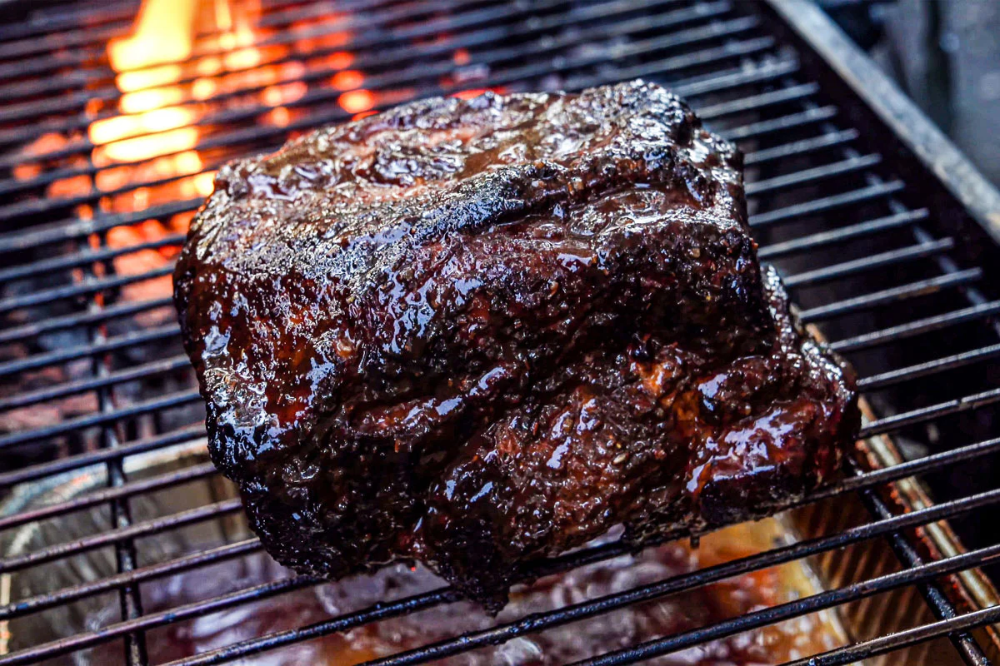

Smoked Pulled Pork

Description
A pulled pork receipe using homemade rub. Remember low and slow will make the collagen break down ending with a tender pork. Be sure to score the fat which helps with rendering the fat.
Ingredients
- Pork butt 6lb
- 6 TBSP Light Brown Sugar
- 3 TBSP Black Pepper Coarse Ground
- 2 TBSP Garlic Powder
- 2 TBSP Paprika
- 1 TBSP Onion Powder
- Kosher Salt
- Mixture of 50% apple cider and water in a spray bottle
Directions
- Preheat smoker to 250 degrees
- Score the fat
- Combine the dry ingredients for the rub
- Season meat with Salt
- Season meat with rub
- Add meat to the smoker, fat side up, at 250 Degrees for 3 hours
- Check the meat to see if it is around 170 degrees and that the fat has rendered properly. The fat should not be springy and your finger should easily push through the fat.
- If Bark is dark enough you can spray with the apple cider making sure not to hit the fat
- Spray every 30 minutes with apple cider until fat is rendered
- Once the fat is rendered and the temp is around 170 , wrap with aluminum foil and place it back in the smoker or in the oven to finish cooking. At this point it will not matter about smoke or flavor as that is already complete at this stage.
- Check the meat with a thermometer until the temperature is around 205 and more importantly that the meat is tender. The probe should easily go through the fat like butter.
- Your pork is done right if you can easily pull the bone out